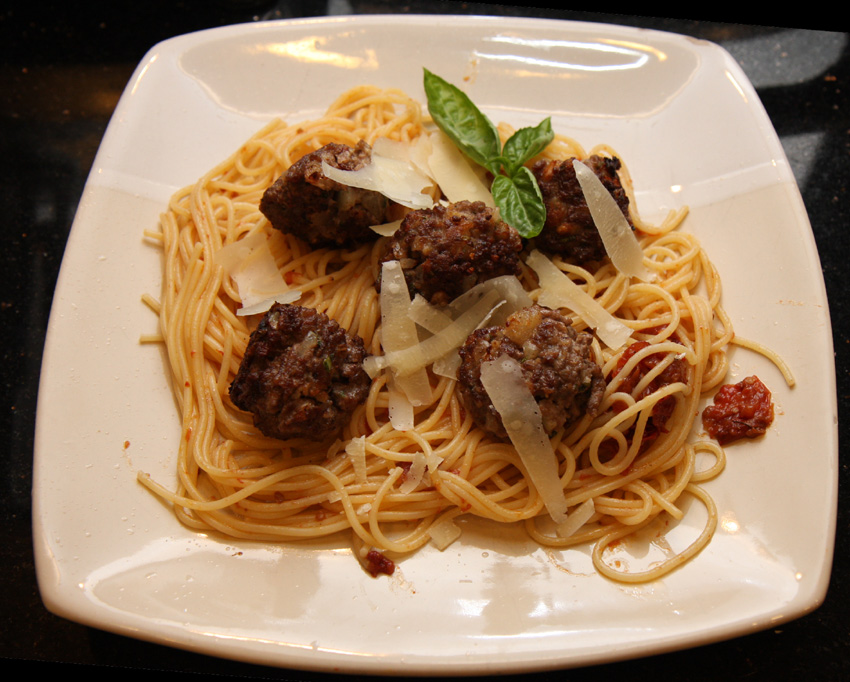

Spaghetti Meatball Bake
Home

Description
A quick, all-in-one recipe for a spaghetti and meatball bake with arrabiata sauce, mozzerella cheese, and meatballs.
Recipe yields 4 servings.
Ingredients
- 18 Meatballs, homemade or purchased, thawed if frozen
- 8oz spaghetti
- 1 24oz jar arrabiata sauce
- 1 cup shredded mozzerella
Directions
- Preheat the oven to 350 F, and place the meatballs on a baking tray.
- Bake meatballs until a slight crust forms (about 15 minutes). Cover and keep warm (meatballs should not be fully cooked when coming out of the oven).
- Boil a large pot of salted water and add spaghetti. Cook for ~10 minutes or until al dente.
- Pour about 1/2 cup of sauce into the bottom of a large casserole dish and spread to coat. Add spaghetti evenly over sauce.
- Arrange meatballs over spaghetti. Cover with remaining sauce, sprinkle with 1/2 cup mozzarella, then cover the dish with foil.
- Bake in the preheated oven for 20 minutes, then remove foil. Top with remaining cheese.
- Return to oven until cheese is melted.